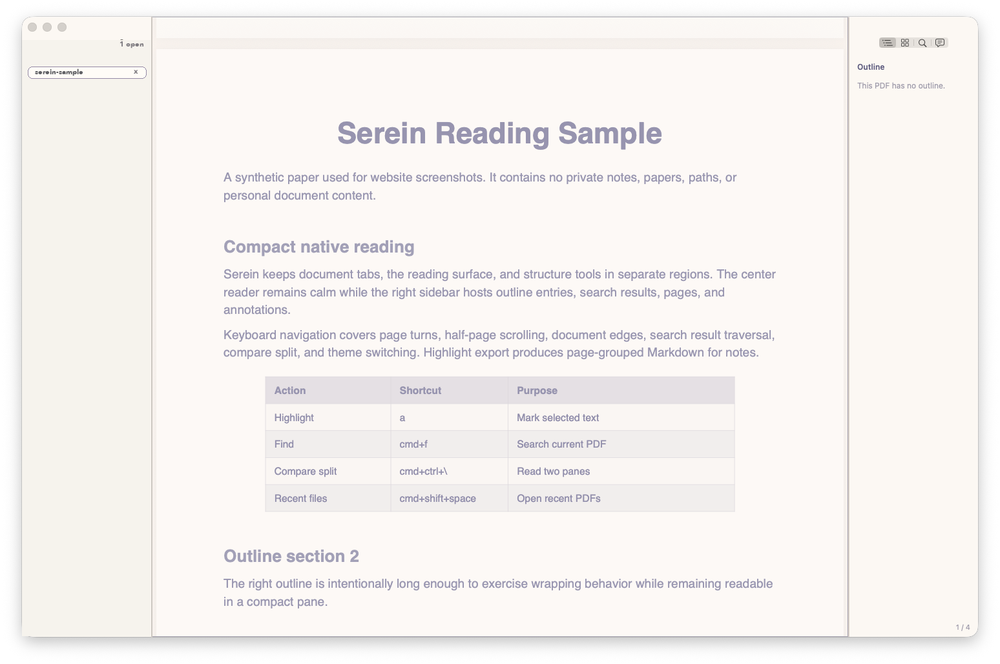

Requirements
- macOS 14 or newer
- Swift 6.1 toolchain for development builds
justfor the local task runner
Serein · macOS PDF Reader
A native PDF reader for research — tabs, outline, highlights, and a keyboard flow that stays out of the way.
Swift · AppKit · PDFKit

Left tabs answer what is open. Center stays for reading. Right holds outline, pages, search, and annotations — quiet even when the workflow is dense.
Switch between a left tab rail and macOS titlebar tabs without changing the document model. Same sessions, same shortcuts, different chrome.
Press A to highlight a selection or enter highlight mode. Add comments in the right sidebar, undo up to 50 steps, export Markdown grouped by page.
Find in this document or across every open PDF. The find bar stays thin; previews and hit lists live in the right pane so reading space stays clean.
Open a second reader for the same PDF or another tab, then arrange the pair side by side or stacked. Each pane keeps its own page and zoom.
⌘⌃\Group selected tabs into a continuous reading set. Page turns cross document boundaries; the outline lists every PDF together without stitching a fake file.
When LaTeX, Typst, or another toolchain rewrites an open clean PDF, Serein reloads it in place and returns to the live page. Sessions with unsaved annotations stay untouched.
Vim-style page turns, half-page scroll, jump to edges, find, overview, and immersive chrome — all configurable in Settings, none of them shouting for attention.
J K · C · GA seamless page grid that shares the reader surface — no nested panels. Zoom for denser tiles, click a page to jump and exit.
⌘⇧OMode plus light and dark themes. Rose Pine Dawn warms the page itself; Rose Pine Moon keeps margins with the dark surface.
Point Settings at folder roots. Index, search, and open from a two-pane library browser without building a file tree in the sidebar.
Share the original, a clean PDF with user marks removed, or highlights as Markdown — page-grouped snippet and comment for note-taking.
Download the latest DMG from GitHub Releases. Locally signed for this project — first launch may need the macOS right-click Open flow.
macOS 14+
Essentials
just for the local task runnerRuntime settings live in: